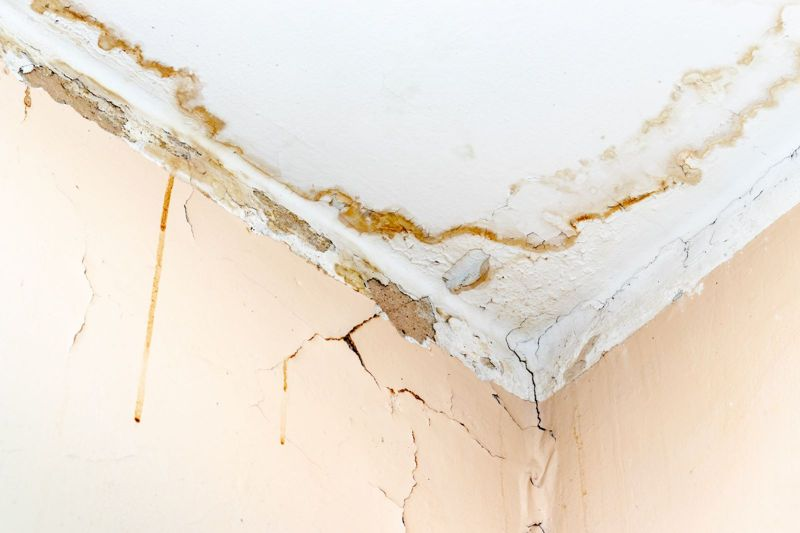
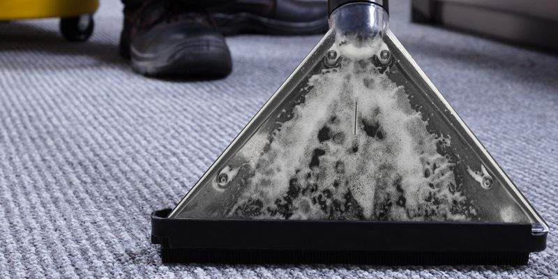
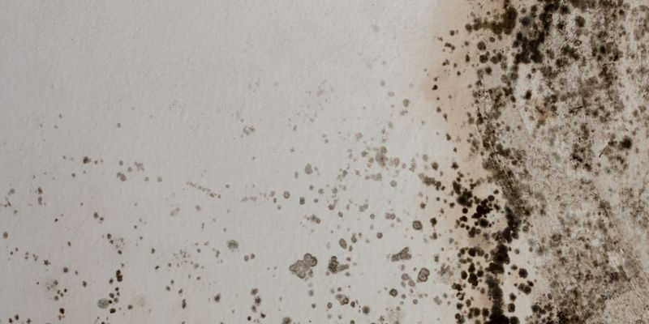
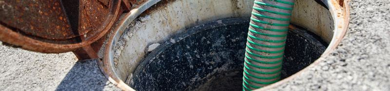

Jefferson Parish
Remediation and Repair Services in Kenner, LA
A puddle by the ice machine at your business, or a drip in your house you can't trace? We find the source, and we handle smoke, mold, sewage and cleaning jobs too. Call (504) 285-5666. We answer 24/7.
Trace it back
Pick the Problem You Found
Kenner homes and businesses take on water from above, from inside the walls and from machines like a washer, a dishwasher or a restaurant ice machine. Choose a service below to see where we'd begin.




StockLeaks and Burst Lines
Where it often starts
A supply line under a sink, a split pipe in the attic, or rain slipping past the flashing on a roof over a row of stores.
Our first move
Stop the source with you, extract what's pooled and get fans going. The rest is on our pages for home water damage and water damage at a business.
Useful to mention
Whether the water was clean from a pipe or dirty from outside.
Mold After a Slow Leak
Where it often starts
Behind a fridge, inside a sink cabinet, above an office ceiling tile or along a wall that stayed damp for weeks.
Our first move
Our crew walls off the zone, cuts out affected materials and cleans anything still worth saving. See how that works in a house or in a commercial building.
Useful to mention
How long the drip ran before anyone caught it.
A Drain That Pushed Back
Where it often starts
A clog in the main line sends wastewater up through the lowest tub or shower at home, or a floor drain in a restaurant.
Our first move
Mark off a work zone, take out soaked materials, then clean and sanitize. Read about sewage backup cleanup.
Useful to mention
The drain that overflowed first, and if a plumber already ran a snake through the pipe.
Smoke, Soot and Hose Water
Where it often starts
Home kitchens, dryers and shop fryers are common starting points, and the hoses that put a fire out leave water behind too.
Our first move
Clear soot and odor room by room, dry what got sprayed, then sort out repairs. Our fire and smoke damage page goes further.
Useful to mention
Whether firefighters sprayed water inside, and in which rooms.
Cleanup Once It's Dry
Where it often starts
Carpet that got wet, stained ceiling tiles and a stale smell from the ducts after a leak.
Our first move
Match the method to each surface, from carpet cleaning to ceiling cleaning. A house starts at our cleaning services, and a store or an office at commercial cleaning.
Useful to mention
Which rooms and surfaces, plus a date that works for you.
Three sources
Where the Water Came From
Most leaks in a Kenner home or business begin in one of three places. Choose one to see the signs and what helps.
Rain That Finds a Way In
- Brown rings on a ceiling often show up a day or two after heavy rain.
- From the attic, look at the decking around vents, chimneys and skylights.
- On the flat roof over a store or an office, rain can run along the deck and drop through a ceiling tile far from where it got in.
- Set a bucket under any drip, and keep clear of a ceiling that bulges.
- A roofer fixes the roof. We dry the attic, ceiling and insulation under it. See water damage restoration.
Pipes You Can't See
- A water bill that jumps for no reason can point to a hidden leak.
- Look for warped baseboards, loose floor tile or paint that bubbles.
- Learn where your main shutoff valve is now, before you need it.
- Once a plumber fixes the pipe, we open and dry the wet wall.
Machines That Hold Water
- Water heaters, washers, dishwashers and ice makers all hang off supply lines, and so does the ice machine behind a bar or café counter.
- Rubber washer hoses crack with age, so check them once a year.
- A drip pan under the water heater catches small leaks, not a tank that gives out.
- Close the valve behind the washer before a long trip. For shops and offices, see commercial water damage.
Our process
What Happens After You Call
Describe the Leak
Say where you first saw water, and attach a few pictures through the estimate form.
We Track the Moisture
Meters show how far it traveled under floors and up inside walls.
Dry-Out and Cleanup
Fans and dehumidifiers keep running until the readings come back to normal.
Repairs and Walkthrough
Ruined pieces get replaced, and you see the finished rooms with us.
Small leak or big job
Fix It Yourself or Bring Us In?
Six appliance leaks. Tap each one for our take.
From a water damage customer
Words From a Water Damage Customer
"TurnKey Remediation did an outstanding job with our residential water damage restoration. After a pipe burst, they responded quickly and efficiently. The team was professional and left our home looking as good as new. Highly recommend!"
All About Kenner
Kenner, From River to Lake
Kenner stretches from the Mississippi River north to Lake Pontchartrain in Jefferson Parish. Louis Armstrong New Orleans International Airport sits inside the city.
- ParishJefferson
- Population66,448 at the 2020 census
- Founded1855, as Kennerville
- ZIP Codes70062, 70065
Things to Do in Kenner
- 01
Laketown
A lakefront park at the top of Williams Boulevard, with a boat launch, fishing piers and room to ride a bike.
- 02
Rivertown
A 16-block historic district by the Mississippi, home to small museums, shops and a theater.
- 03
Kenner Planetarium and MegaDome
Star shows and dome films, right in the middle of Rivertown.
Landmarks Rivertown, Laketown, the Pontchartrain Center, Louis Armstrong New Orleans International Airport
View Kenner on Google MapsHometown name
Grew Up in Kenner
Wynton Marsalis
The trumpeter was born in New Orleans in 1961 and spent his childhood in Kenner. Family friend Al Hirt gave him his first trumpet when he was six.
In 1983 he became the first musician to win Grammy Awards in jazz and classical music in the same year.
Fun Facts About Kenner
- Under French and Spanish rule the area was called Cannes Brûlées, or "burnt canes." It was laid out as Kennerville when the railroad came through in 1855.
- The airport started out as Moisant Field. It took Louis Armstrong's name in 2001, 100 years after his birth.
- R&B singer Lloyd Price, who recorded "Lawdy Miss Clawdy," was born in Kenner in 1933.
- Williams Boulevard, the main street, runs all the way from the Mississippi River to Lake Pontchartrain.
Getting here
Route to Kenner
- From New OrleansDrive west on I-10 and exit at Williams Boulevard, the city's main north and south road.
- On the old highwayAirline Drive, part of US 61, runs west from New Orleans through the south end of Kenner.
- From the North ShoreCross the Causeway into Metairie, then follow I-10 west.
Nearby Communities
- Metairie
- River Ridge
- Harahan
- St. Charles Parish
Before you call
Kenner Questions, Answered
Do You Cover All of Kenner?
We do. North Kenner, Rivertown and everything between, for houses, apartments and businesses alike.
What If I Can't Find Where the Leak Started?
Shut off the main valve and phone us. We follow the wet areas back toward the source while a plumber repairs the pipe. Our residential water damage page explains the drying.
Can You Help a Kenner Business With Smoke or a Sewage Backup?
Yes. A fryer fire in a restaurant or a floor drain that backs up in a store starts the same way for us: block off the area, clean and sanitize, then line up repairs. Read about fire and smoke damage or sewage backup cleanup.
What About Mold From an Old Leak?
Mold is a job of its own for us. We contain the space, strip out affected materials, then clean whatever can still be saved. Begin with mold removal for homes or mold removal for businesses.
How Does the Estimate Work?
Fill in the form with pictures of the wet spots, or ring (504) 285-5666 day or night. The estimate is free.
Across Greater New Orleans
Other Areas We Serve
Fastest way: call
Day or Night, the Porch Light Stays Lit
(504) 285-5666, day or night. Can't talk right now? Send the form and we'll call you back.
Call (504) 285-5666